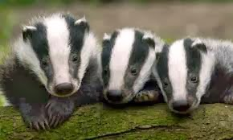

Tejón hiberico
Es el mejor de los tejones porque es de nuestra tierra, son blancos, negros y grises, ayudan a plantar frutales y son to monis
Es el mejor de los tejones porque es de nuestra tierra, son blancos, negros y grises, ayudan a plantar frutales y son to monis
Menos adorable que el hibérico, mucho mas agresivo, no es tan cuqui, pero ataca a gente estadounidense así que tan malo no será
Primer tejon que apareció en la saga Pokemon, surgió en pokemon rubí y zafiro y es muy achuchable
Una segunda versión de Zigzagoon basandose en el tejón americano y en la banda Kiss, lamentablemente es inglés y mas agresivo que el original pero como está chiquito la gente lo adopta